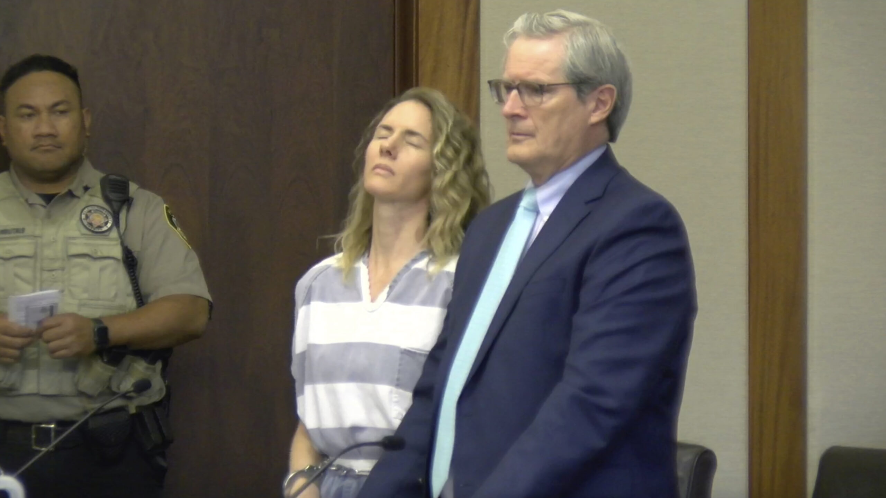

Ruby Franke is the mother behind the family channel "8 Passengers" where she covered "family life" to over 2 million subscribers. This is probably the worst case of atrocious child treatment ever seen in a family channel. The stories behind this woman were harrowing enough to be covered on a true crime youtube channel that posts BODY CAMERA FOOTAGE!! (which is how her downfall began). She was arrested on multiple accounts of child abuse in 2023.

====Crime/Allegation List====
Summary of Crimes/Allegation
Official charge: 4 counts of child abuse in 2023. Franke's "partner in crime" Jodi Hildebrandt recieved the same charges.
Case started when a starving 12 year old boy showed up at a neighbors house with duct tape marks on his wrists and ankles
Report detailed children were often deprived of food, water, and beds while simulteaneously being tasked with loading boxes, outdoor labor, and even being forced to do a wall-sit position for hours
Disturbing injury reports, as children were described with severe ankle/wrist wounds due to rope which was also applied with an atrocious mixture of cayenne pepper and honey(what on earth)
Police also recovered Franke's journal which depicted sickening punishments
Years before the first charge, Franke made disturbing statements that should have started a criminal case right then and There
Franke would say that she thought of witholding food and removing beds as a form of "discipline"
She would say that the children are "numb to pain" and deserve more (sickening)
====Victims====
List of victims and their documentary
All children featured in the videos
====Consequences====
Their Consequences
Arrested in 2023 on 4 accounts of Aggravated child abuse
Sentenced to four consecutive terms of 1-15 years jail